Defining Our Map
Warning
Here's comes a tricky bit, since getting this wrong may cause us to end up with a map at the wrong scale, and effort wasted. If you use the example project to create your own map, make sure to follow the instructions related to the coordinate system.
Make sure QGis is now using our UTM coordinate system again (since measurements on other coordinate systems might result in the wrong scale). Check "Project", "Project Properties", "CRS" tab and re-select our WGS 84 / UTM zone entry again. Press Apply, OK.
Decorative Grid 5km
Next, enable a decorative square grid at 5km scale. This will help us draw a box reflecting the intended map size. To display the decorative grid, use the "View" menu, Decorations, Grid. In the Grid properties dialog, select Enable grid, and set the Interval X and Interval Y to 5000 (meters). Press Apply and OK.
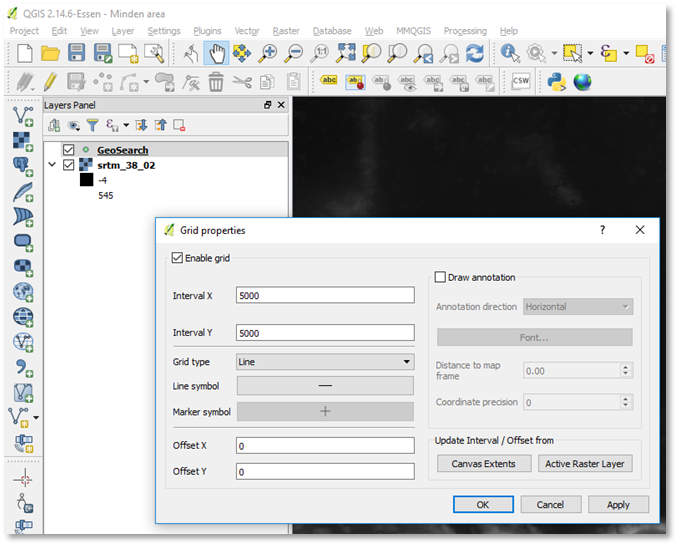
Figure 18 Enabling a decorative 5km grid
Creating an Area Box
To pick and plan our map area, we are going to create a map area box. The typical map size for FCSS is 46×30 hexes, which at 500m hex corresponds to approximately 20 x 15 km (the hexes overlap a bit in the horizontal direction, and consume 433m width, not 500m).
Warning
QGis will let you create larger or smaller maps just as easily. My experience is that beyond 35km, the earth's round shape will cause bending of the UTM based hex grid (which we'll create later), so lines and shapes drawn on this QGis hex grid tend to deviate from the grid assumed by FCSS, and "leak" into neighboring hexes. The large 90x60 hex "Eiterfeld" northern Fulda corridor map in Flashpoint Campaigns: Germany Reforged was a challenge because of this. For a first map, I suggest starting small with a 20x15km area.
Now, let's create a new layer for our new map area (and future ones), and then draw the area box.
Use the "Layer" menu, "Create Layer", "New Shapefile layer" to define a new layer. In the dialog box, select Type "Polygon", and check that the CRS used is our WGS 84 UTM one.
Under "New field", type "area", set the type to "Text data", and press "Add to fields list". This will add a field for the area's name.
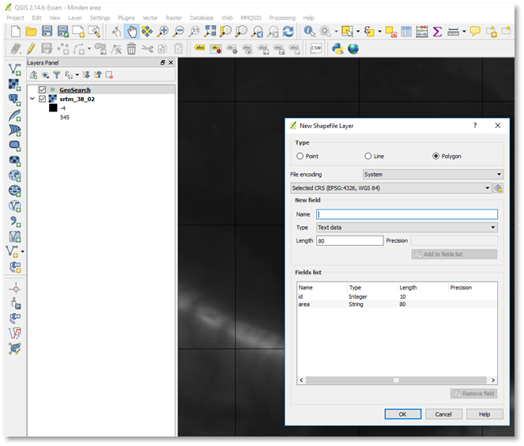
Figure 19 Creating a new layer to contain the area box(es)
Next, press OK to create the layer. Name the layer "area_boxes" and save it insider our project folder.
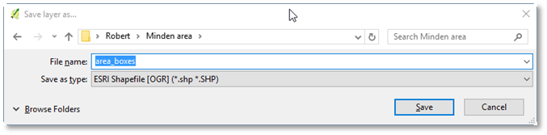
Figure 20 Saving the area boxes layer as "area_boxes" inside our project folder
Now we select the newly created "area_boxes" layer in the Layers Panel, and toggle editing to "on" (using the Pencil icon, or the Layer menu, Toggle editing).
Next, we draw a rectangle of 4 grid squares wide (4×5km = 20km) and 3 grid squares high. It doesn't have to be pixel perfect, and its location doesn't matter too much. Under "Edit" menu, choose Add feature. Draw the polygon by clicking the four corners of a 4×3 grid square rectangle, then use the right mouse button to indicate we are done and show the dialog.
Enter "Minden" as the area name. You can leave the id blank. And press OK. (Or, if you are not happy, press cancel, so the polygon is discarded, and you can create a new one).
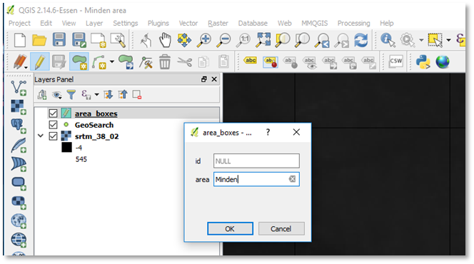
Figure 21 The pop-up dialog when we're done drawing the area box rectangle
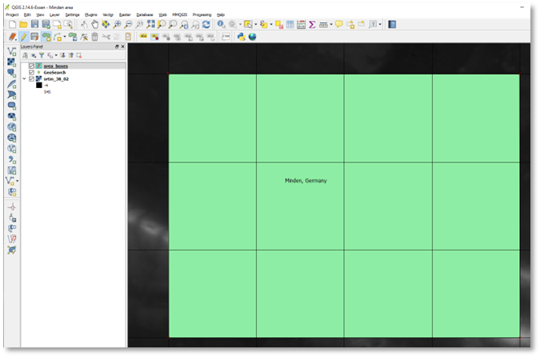
Figure 22 Our 4×3 5km square box for the Minden area
Make sure to save the edit to the area_boxes layer, using "Layer" menu, "Save Layer Edits".
Styling and Positioning the Area Box
QGis gave the area_boxes layer a default style (green uniform fill). We are only interested in the box's only, so let's change the style. In the Layers panels, select the area_boxes layer. Use right mouse button, select Properties, then select the Style tab. Using the "Style" button at the bottom, Load Style, and select the "editing_style_areabox.qml" style from the presets we installed previously in our project folder.
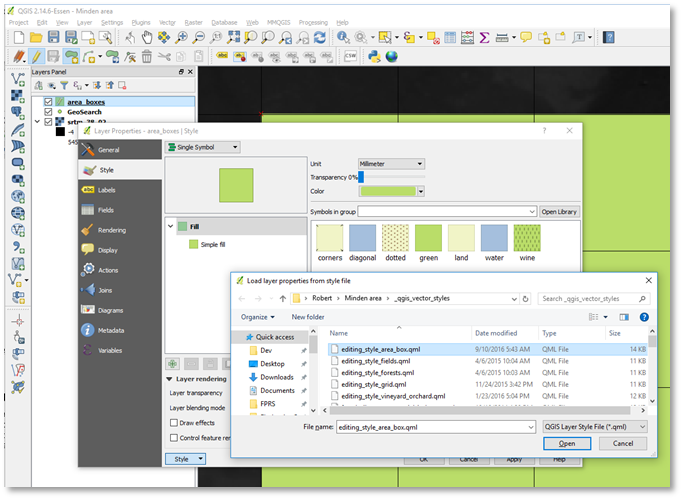
Figure 23 Loading a style pre-set for the area box layer
In the file selection dialog, press Open. Next, press Apply and OK.
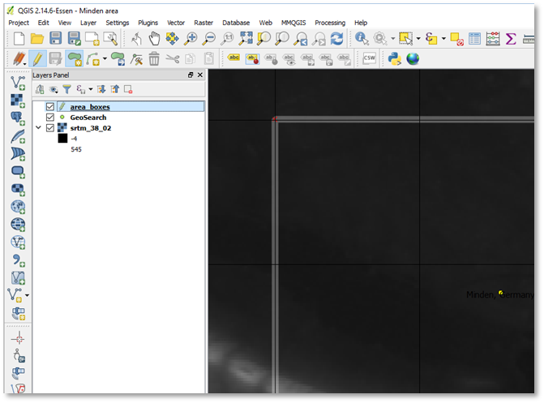
Figure 24 Area box with new style
We are still looking an at elevation only map of the Minden area, making it hard to position our map box. If we add a "Google maps" style road map with some elevation shading underneath, it becomes much easier to positioning the box to capture interesting terrain.
Note
My experience with Bing (satellite) maps in QGis has been better than with Google maps. With Google maps, occasionally the layer didn't refresh properly when zooming in and zooming out, and occasionally the maps layer shifted a few hundred meters. I don't have a clue what the cause of this problem is (me, QGis, the OpenLayers plug-in or Google), but when the Bing maps are good enough, I use these.
Use "Web" menu, "OpenLayers plug-in" and add a layer. Here, the OpenStreetMap/OCM Landscape is a good option since it displays roads and elevation.
After a brief pause (due to retrieval of map tiles from the Internet), a new layer OCM Landscape is shown on top.
Use the Layers Panel, select the area_boxes layer, and drag it upwards so it sits above the OCM Landscape layer, and the area box is shown on top of the OCM Landscape layer.
Also disable the 5km Decorative Grid, since QGis, under the hood, has switched to a different projection and coordinate system, to use map tiles from Internet sources. As a result, the 5km decorative grid is no longer accurate; actually, it is more than 30% off! (View, Decorations, Grid, and untick the grid lines option).
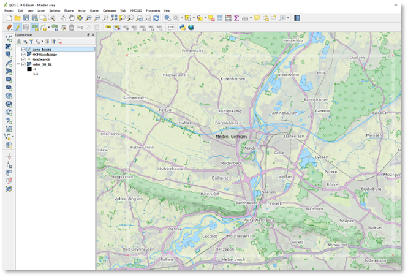
Figure 25 White area box outline shown on top of OCM Landscape map
QGis shows us which terrain can be covered by a 20x15km map. Let's move it south a bit, so it covers the bridge at Oeyenhausen (a critical bridge in the "Red Army" cold war novel by Ralph Peters), but still features the Mittellandkanal running east-west just north of Minden.
Ensure the area_boxes layer is selected. Use the "View" menu, Select, Select Feature(s), then click inside the Minden area box to select it. Next, use "Edit" menu, Move Feature(s) to switch to a move mode, and move the area box south. Finally, deselect the box (so we can see through it) using "View" menu, Select, Deselect all selections.
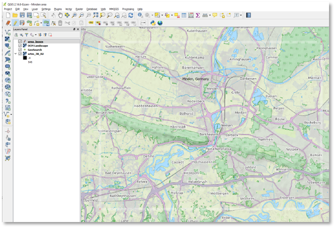
Figure 26 Improved position for our area box
Positioning Our 500m Hex Grid
Finally, it is hex time! However, before you can create a hex layer, be sure to force QGis to use the WGS 84 UTM coordinate system again (using Project, Properties, CRS, or the shortcut in the right bottom corner of QGis).
Next, center the Minden area box in the center of the window, with a few kilometers of margin to the window borders.
Create the hex grid layer using the "MMQGis" menu, Create, Create Grid. In the "Grid" dialog, change the Shape Type to Hexagons. Change the output Shapefile to save the grid as "grid_500_minden" in our project folder (via the Browse button). Use Project Units (should be metric). Choose Extent "Current Window". Set Y-spacing to 500 (X-spacing will automatically adjust to 433). Press OK to create the hex grid layer.
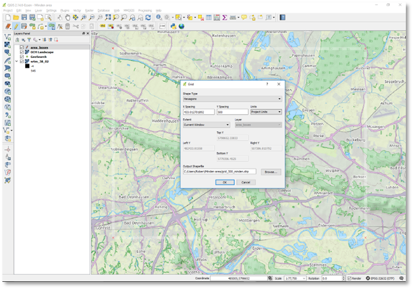
Figure 27 Minden area centered in window with margin, and MMQGis hex grid dialog
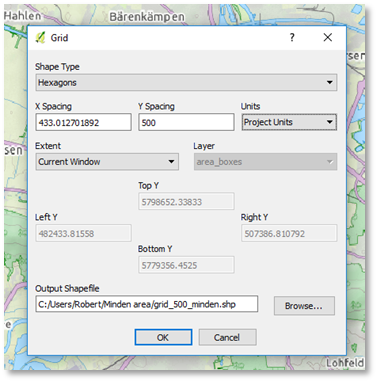
Figure 28 MMQGis hex grid dialog settings
Select the grid_500_minden layer and change its style to a transparent grid using right mouse button, Properties, Style, Load Style, and load the _qgis_vector_styles\editing_style_grid.qml style.
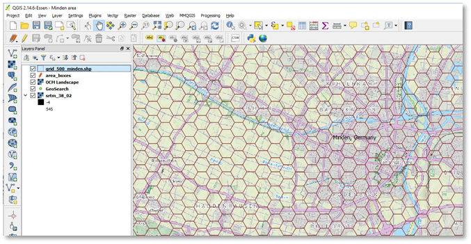
Figure 29 Zoomed in our new hex grid layer
Finally, we try to tweak the position of the hex grid such that the major river Weser and the Mittellandkanal runs through the center of the hex (especially where their roads and rail roads near). This to minimize the shifting of roads when we represent those wide rivers and canals as full 500m hexes. Obviously, achieving a perfect placement isn't possible since nature (outside beehives) doesn't conform to hexagons.
The easiest way to move all the hexagons of the grid_500_minden is deselect all elements of the layer, then invert the selection. So, select the grid layer, toggle layer editing. Next, use View, Select, Deselect features from all Layers. Then, use View, Select, Invert Feature Selection. Finally, use Edit, Move Features to tweak the grid position. After tweaking, make sure to save the layer edits.
Rendering the Elevation in FC's Color Palette
With the area selected and a hex grid in place, we can start building our game map. The first step is to render the elevation data in the Flashpoint Campaigns' elevation color palette, from elevation 1 upwards, for our map area.
We do so by using QGis to tell us about the actual elevation in the Minden area, and select the most appropriate style from the preset styles.
In the Layers Panel, deselect the OCM Landscape overlay, so we can see the underlying elevation data.
Select the area_boxes layer, then select the Minden area box in the layer. Next, use View menu, "Zoom to Selection" to focus on the map area.
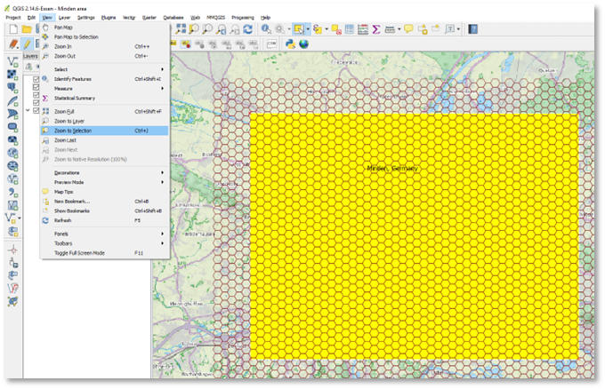
Figure 30 Zooming to the Minden area box
Next, select the srtm elevation layer. Use right mouse button and duplicate it. (It won't duplicate the 70MB data file on disk, just the layer entry in our project's layers).
Rename the new duplicate elevation data layer to srtm_38_02_Minden. Deselect the srtm_38_02 layer in the project (so it isn't rendered), and select the new srtm_38_02_Minden so it will be rendered. (The purpose is of this is to capture this area's elevation setting separately from perhaps a next map area 30km south and 100m higher that uses the same elevation data).
With srtm_38_02_Minden select, use right mouse button, Properties. The properties dialog allows you to do two things: (1) inspect the actual elevation in the area in view, and (2) apply a style.
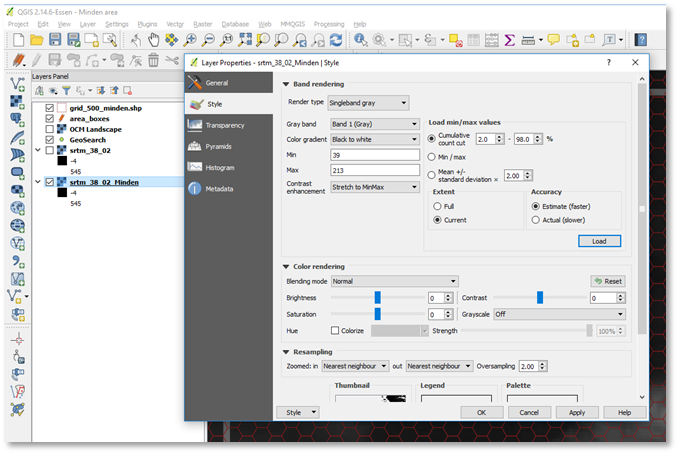
Figure 31 Inspecting Minden area's elevation and applying the corresponding elevation style
To inspect the elevation in Minden's area, select as "Extent" "Current", then press the Load button. It will show you a minimum elevation of around 39m and maximum elevation of around 213m.
As a rule of thumb, round up from the minimum elevation to the next multiple of 25m, and pick an elevation style starting with that number (so 50m, in this case).
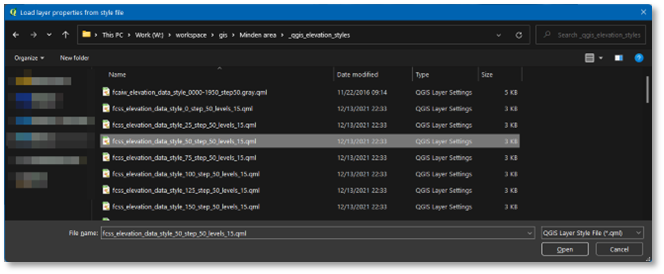
Figure 32 Loading the 50m step elevation style starting at 050m
To load the elevation style, press the Style button, "Load Style", load the 50_step50 file from _qgis_elevation_styles folder, and press Apply.
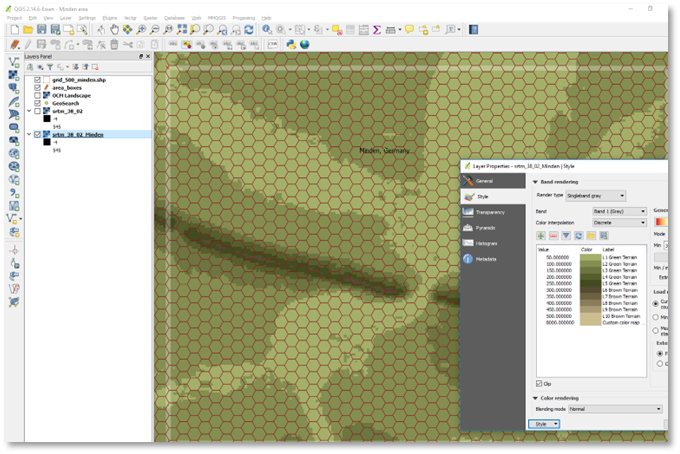
Figure 33 Minden area elevation rendered in Flashpoint Campaigns colors
Feel free to check what the elevation looks like when choosing a floor of 25m (so the 025_step50 style) or of 75m. My subjective feeling is that the 50m floor represents the terrain the best. The benefit of QGis is that we can change the elevation (colors) easily, and at any time.